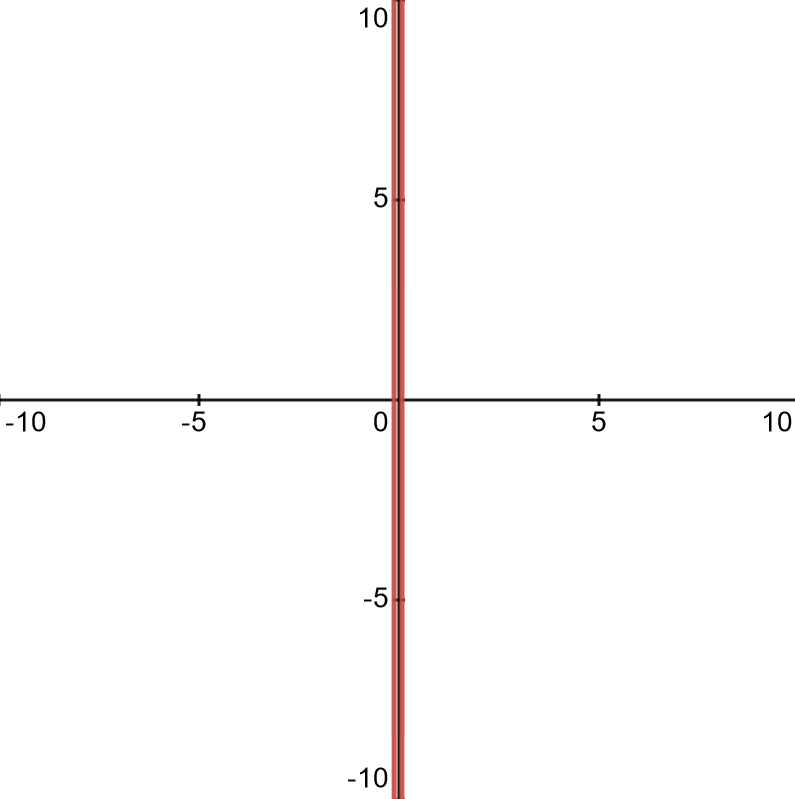
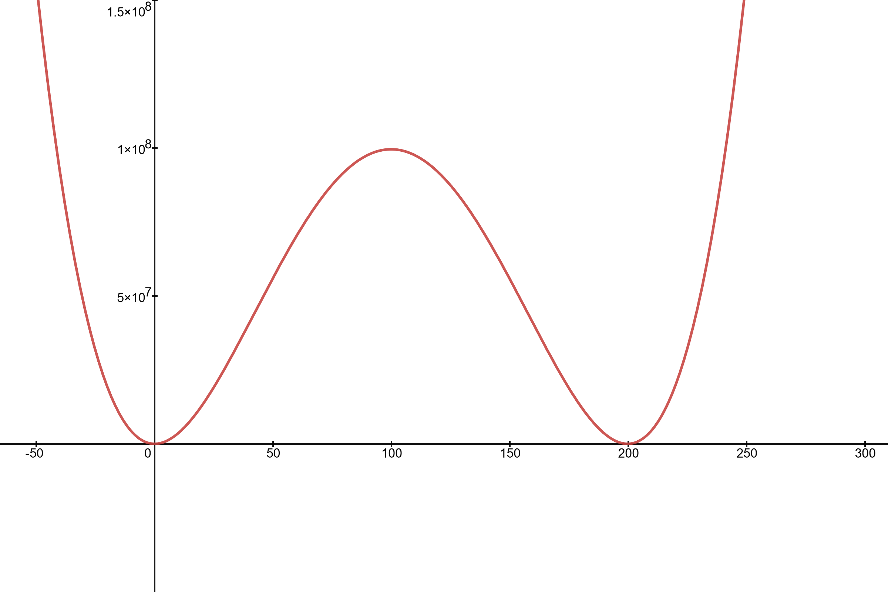
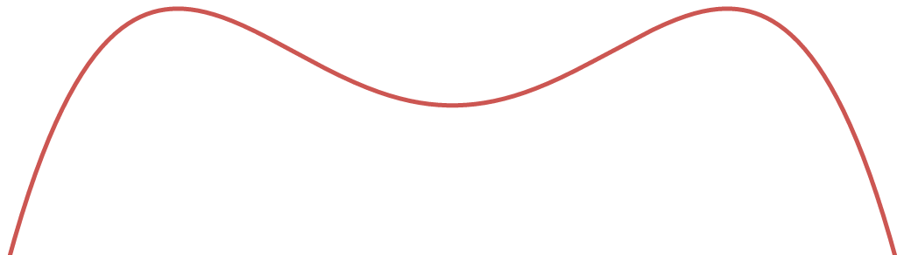
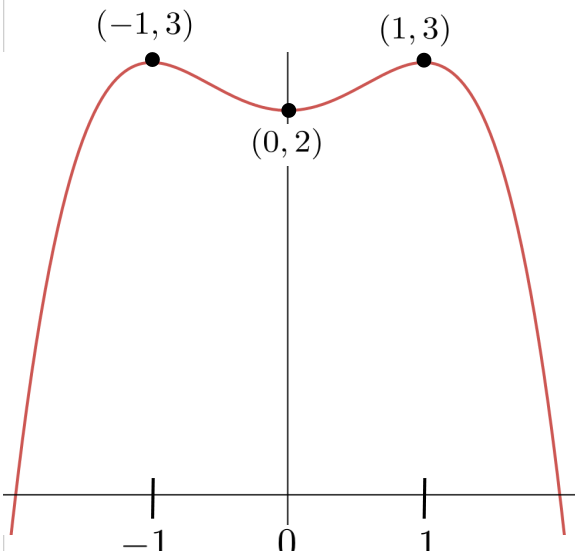
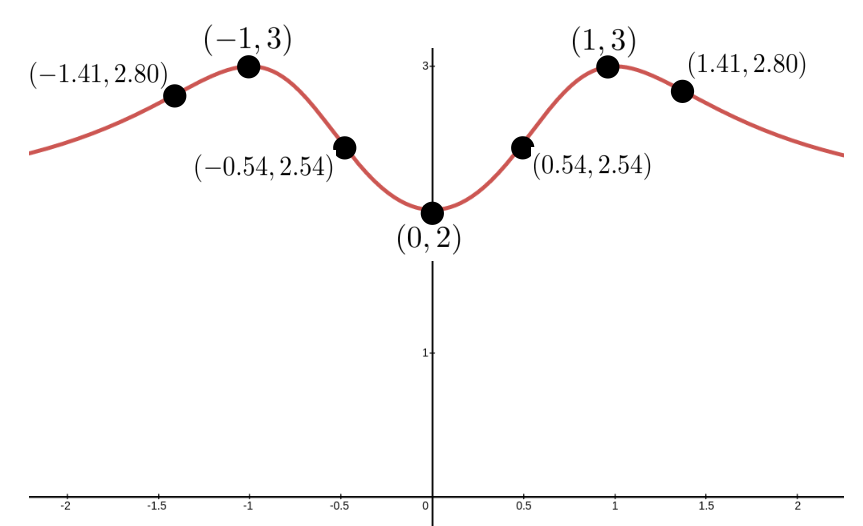

Section 10.1 Graphing with a Formula for \(y(x)\)
Mankind invented a system to cope with the fact that we are so intrinsically lousy at manipulating numbers. It’s called a graph.―Charlie Munger (1924—2023)
In an age when everyone can open their cell phone and graph, for example, the function
\begin{equation}
y(x) =x^4 - 400.5 x^3 + 40099.49 x^2 + 4.005 x - 400.995,\tag{10.1}
\end{equation}
literally in seconds it may not seem important to understand the nature of functions at any deeper level. After all, if you have a formula you know everything there is to know about a function, right?
Well, yes . . . and no.
In one sense, obtaining a formula that describes whatever real–world phenomena you might be investigating is the Holy Grail, of science. And for exactly the reason you would expect. Formulas can tell us a great deal about the phenomenon. But they don’t tell us everything.
For example, suppose equation (10.1)) describes some real world phenomenon. Does reading the formula give you any sense of the essential qualities of \(y(x)\text{?}\) No, of course not. Because pictures are easier to understand than formulas we usually look at the graph of a function to get a sense of it. We used one of the many graphing systems available to generate the graph of \(y(x)\) seen in Figure 10.1.1 below. Impressive, isn’t it?

Because we simply used the default settings of our graphing tool this picture doesn’t really help much either. We’ll have to modify the viewing window to see anything useful. Take out your favorite graphing utility and adjust the settings until you find settings that give you a more useful display like the one in Figure 10.1.2 below.

To be sure, this graph does tell us great deal about the qualitative behavior of \(y(x)\text{.}\) Visualizing the graph in this way is a good thing. But getting more detailed information can be tricky. For example, what are the exact values of the \(x\) coordinates of the two places where the graph appears to graze the \(x\) axis? One appears to be \(x=0\) and the other appears to be \(x=200\text{,}\) but is that right? Notice the horizontal and vertical scales. Can we be sure that at these scales all of the important bumps an wiggles on the graph are visible? When the top of the graph is at \(y=\) ten million can we tell, just by looking, if \(y(0)=y(200)=0\text{?}\)
You might well ask, “Obviously when \(x=0\) and \(x=200\) \(y\) is near zero. Is it really important to know whether or not it is exactly zero?”
The fact is that it is hard to get good quantitative information from anything but very simple graphs. But does that matter? From the graph above we can see very plainly what is happening over a very large interval. Isn’t that enough?
Well, that depends.
Suppose you are a nuclear engineer and you’ve invented a simple process that requires an external source of energy. Suppose further that the graph above shows the rate of energy consumption, \(y\text{,}\) of your process as a function of the ambient temperature, \(x\text{.}\) Then any temperature at which \(y\lt 0\) is a temperature where the process is producing energy, not consuming it. Depending on rate of production and how simple the process is, being able to identify the temperature range where \(y(x)\lt 0\) could be the difference between winning the Nobel Prize, and becoming a laughing stock.
You would want to know.
In this chapter we will explore some techniques that will help you win your Nobel Prize.
Aside: Comment.
In Chapter 9 we saw that the First and Second Derivative Tests are exactly the tools necessary to answer each of the following questions:
-
On what intervals is the function increasing and on what intervals is it decreasing?
-
Where are the local extrema located?
-
What are the values of the local extrema?
-
Where does the inflection of the graph transition between concave up and concave down?
Example 10.1.4.
For example consider the following function. \(y=\frac{x}{1+x^2}\text{.}\) Differentiating \(y\) we see that
\begin{equation*}
\dfdx{y}{x}= \frac{(1+x^2)-2x^2}{(1+x^2)^2} =
\frac{1-x^2}{(1+x^2)^2}.
\end{equation*}
This tells us that \(y(x)\) will have POTPs at \(x=1,\) and \(x=-1.\) Testing a single point in each of the intervals between POTPs we see that
\begin{equation*}
\dfdxat{y}{x}{-2} = \frac{-3}{25},\ \ \
\dfdxat{y}{x}{0} = 1,
\text{ and }
\dfdxat{y}{x}{2} = \frac{-3}{25},
\end{equation*}
and conclude that the graph is decreasing on the interval \(\left(-\infty,-1\right)\text{,}\) increasing on the interval \((-1,1)\text{,}\) and decreasing again on \(\left(-2,-\infty\right)\text{.}\) Computing the second derivative gives:
\begin{equation*}
\dfdxn{y}{x}{2}= \frac{-2x(3-x^2)}{(1+x^2)^3}.
\end{equation*}
This tells us that \(y(x)\) will have PITPs at \(x=-\sqrt{3}\text{,}\) \(x=0\text{,}\) and \(x= \sqrt{3}\text{.}\) Testing a single point in each of these intervals between PITPs we see that
\begin{equation*}
\eval{\dfdxn{y}{x}{2}}{x}{-2} \lt0,\ \ \
\eval{\dfdxn{y}{x}{2}}{x}{-1} \gt0,\ \ \
\eval{\dfdxn{y}{x}{2}}{x}{1} \lt0,\ \ \
\text{ and }
\eval{\dfdxn{y}{x}{2}}{x}{2} \gt0,
\end{equation*}
and conclude that the graph is concave downward on the interval \(\left(-\infty,-\sqrt{3}\right)\text{,}\) concave upward on the interval \((-\sqrt{3},0)\text{,}\) concave downward on the interval \(\left(0,-\sqrt{3}\right)\text{,}\) and concave downward on the interval \(\left(\sqrt{3}, \infty\right)\text{.}\)
Problem 10.1.5.
Use your favorite graphing tool to graph \(y=\frac{x}{1+x^2}\) and confirm our conclusions.
Example 10.1.6.
The previous example was fairly simple so it was easy to keep all of the important information in mind at the same time. This will not always be the case so we will need ways to organize the data we collect. This will ensure that it is not overwhelming. Below we demonstrate one way to do this. It is not the only way. Let’s sketch the graph of
\begin{equation*}
y=\frac{2+2x^2+2x^4}{1+x^4}
\end{equation*}
using Calculus. To use the First Derivative Test we’ll need the derivative \(\dfdx{y}{x} =y^\prime(x)= \frac{4x(1-x^4)}{(1+x^4)^2}
\text{.}\)
Setting the first derivative equal to zero and solving we see that we have a POTP at \(x=-1\text{,}\) \(x=0\text{,}\) and at \(x=1\text{.}\) To make all of this easier to see we arrange this data in the following table. Notice that we have organized our POTPs (and hence the intervals that we are testing) from left to right, just as they would appear on a number line.
| Interval | \((-\infty, -1)\) | \((-1,0)\) | \((0, 1)\) | \((1,\infty) \) |
| \(y^\prime(x) \) | \(\gt 0\) | \(\lt 0\) | \(\gt 0\) | \(\lt 0 \) |
| \(y(x) \) | \(\nearrow\) | \(\searrow\) | \(\nearrow\) | \(\searrow\) |
From the table above we see that we have a local maximum at \(x=-1\) and \(x=1\) and a local minimum at \(x=0\text{.}\) Based on this information we could reasonably infer that the graph might have the shape shown below.

The next step is to locate this graph on the \(x\)–\(y\) plane. From our table above we see that the local minimum is at \(y(0)=2\text{,}\) and the two local maxima are at \(y(-1)=y(1)=3\text{.}\) Thus we can, again reasonably, infer that the graph of \(y(x)\) is located on the plane as shown below.

Unfortunately, we don’t know that our graph is correct (in fact, it is not) because we’ve made assumptions regarding its concavity that we haven’t justified. This is the same error we made in the discussion following Example 2.3.1, back in Chapter 2 when we drew a right triangle because it “seemed to be” correct. It is very easy to make this sort of mistake. Be careful. We can analyze the concavity of the graph using the second derivative in a manner very similar to what we did earlier with first derivative.
Drill 10.1.9.
The shape seen in Figure 10.1.8 is just one possible shape we could infer based on the data we have. Sketch two more distinct graphs that match our data.
Drill 10.1.10.
-
Confirm that the derivative of the function in Example 10.1.6 is\begin{equation*} \dfdx{y}{x} =y^\prime(x)= \frac{4x(1-x^4)}{(1+x^4)^2}. \end{equation*}
-
Confirm that the second derivative of the function in Example 10.1.6 is:\begin{equation*} \dfdxn{y}{x}{2} = y^{\prime\prime}(x)= \frac{4(1-12x^4+3x^8)}{(1+x^4)^3}\text{.} \end{equation*}
-
Use an appropriate computational tool, or Newton’s Method, to show that the PITPs of \(y(x)\) are: \(x\approx -1.41\text{,}\) \(x\approx -0.54\text{,}\) \(x\approx 0.54 \text{,}\) and \(x\approx 1.41 \text{.}\)
-
The PITPs in part (iii) can actually be computed exactly. Find the exact solutions and confirm the approximations.
Next we set up a table to analyze the concavity of \(y=\frac{2+2x^2+2x^4}{1+x^4}\text{.}\)
| Interval | \((-\infty,-1.41)\) | \((-1.41, -0.54)\) | \(( -0.54, 0.54)\) | \(( 0.54, 1.41)\) | \(( 1.41, \infty)\) |
| \(y^{\prime\prime}(x)\) | \(\gt 0\) | \(\lt 0\) | \(\gt 0\) | \(\lt 0\) | \(\gt 0\) |
| \(y(x)\) | \(\bigcup\) | \(\bigcap\) | \(\bigcup\) | \(\bigcap\) | \(\bigcup\) |
From Table 10.1.11 we see that \(y(x)\) has inflection points at \(x=-1.41\text{,}\) \(x=-0.54\text{,}\) \(0.54\text{,}\) and \(x=1.41\text{.}\)
Combining the data in this table with the data in our previous table it would seem reasonable to infer that the graph of our function looks like the one below.

Does this graph above seem complete to you now? Obviously it is not, or we would not have asked, but do you see what is missing? What happens to \(y(x)\) as \(x\) is very far from zero in either the positive or the negative direction? Does \(y(x)\) continue to drop? Or does it eventually level off? We’re not quite ready to talk about this yet, so give it some thought and take your best guess. We’ll come back and finish this example in Section 12.1 after we’ve developed some essential notation and definitions.
Drill 10.1.12.
Use the first and second derivatives to sketch the graph of each of the following functions, then sketch it again using graphing software. Resolve any discrepancies between the two graphs.
-
\(\displaystyle y=e^x \)
-
\(\displaystyle y=\ln(x) \)
-
\(\displaystyle y=\sin(x) \)
-
\(\displaystyle y=\cos(x) \)
-
\(\displaystyle y=\sin(x)\cos(x) \)
-
\(\displaystyle y=xe^x\)
-
\(\displaystyle y=\frac{e^x-e^{-x}}{2} \)
-
\(\displaystyle y=\frac{e^x+e^{-x}}{2} \)
-
\(\displaystyle y=x(x-1)\)
-
\(\displaystyle y=x^2(x-1) \)
-
\(\displaystyle y=x^2(x^2-1) \)
-
\(\displaystyle y=x(x-1)(x-2) \)
-
\(\displaystyle y=x\sqrt[3]{x-8} \)
-
\(\displaystyle y=\sqrt[3]{x}{(x-8)} \)